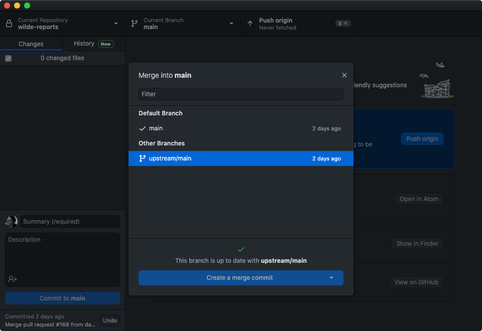
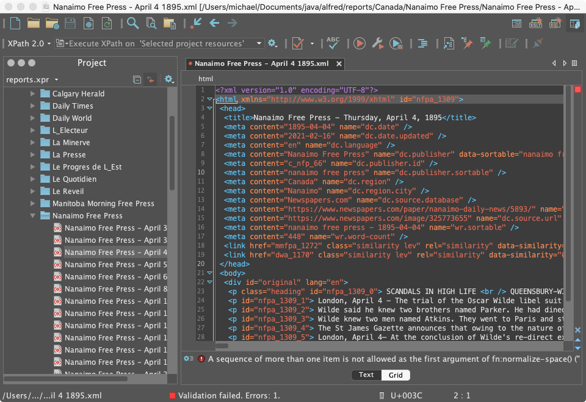
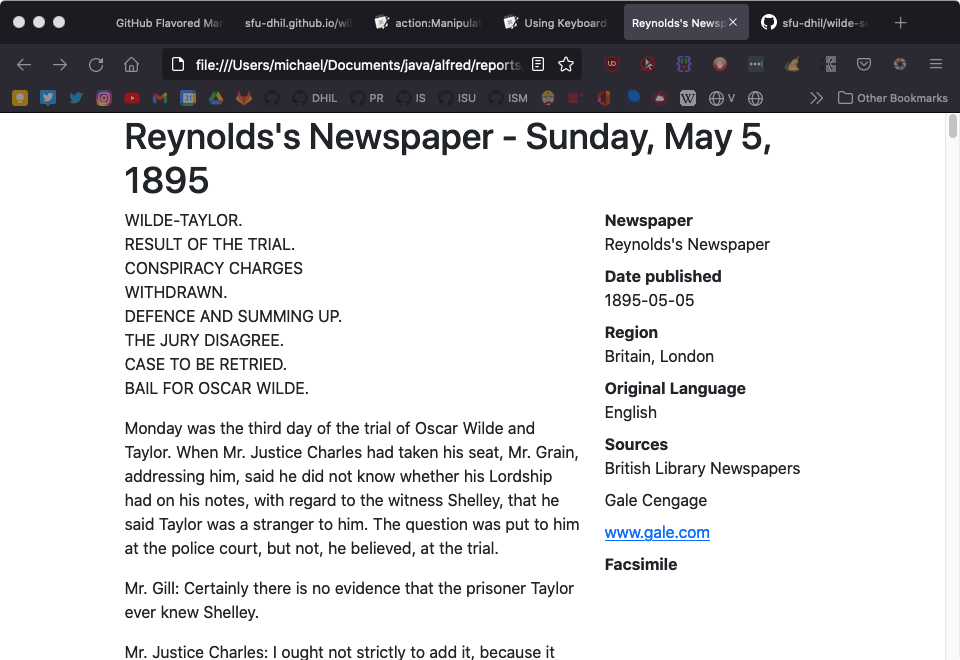
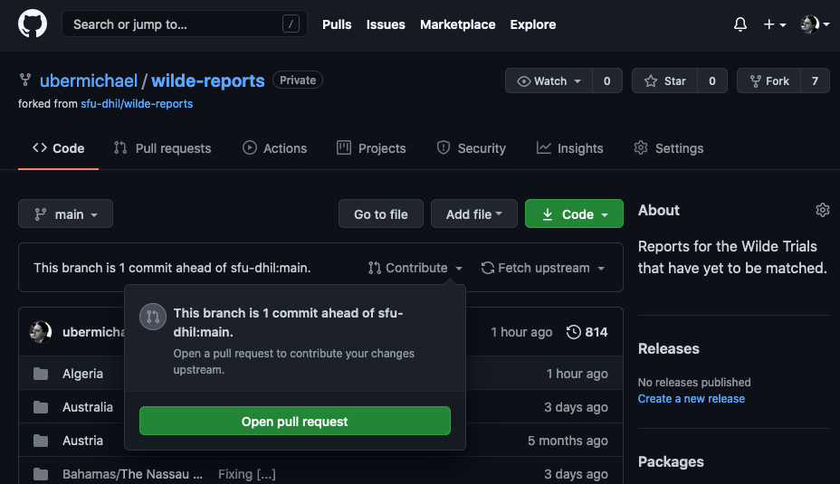

Update your local copy of the repository by merging any changes
from the upstream repository. To do so:
Open GitHub Desktop and click the branch tab (the second tab
on the top; it will say something like "main"):
Branch Menu
In the branch menu, click Choose branch to merge into
main:
Choose branch merge
Click on "upstream/main":
Select upstream main

Depending on whether your repository is up to date:
If there are no changes to merge (This branch is up to
date ...), then you're done!
If there are changes to merge (This will merge x
commits...), then click Merge upstream/main.
Editing in oXygen
All work on the reports should be done in oXygen. It is an
incredibly powerful and useful tool for editing XML & XHTML, and
there are a number of custom features and tools that will make
editing easier and more efficient.
When you open oXygen, make sure you see the
reports.xpr
project in the oXygen project
pane (usually on the left-hand side):
Project pane
oXygen remembers the last project you opened, so it will usually
use the
wilde-reports
project file
automatically. If, for whatever reason, you are not in the
wilde-reports
project, make sure to open the
project file by going to
Project/Open Project
in the toolbar. You can use the Project pane to navigate through the
project files; all of the HTML files are in the
reports/
folder.
On your system, the folder may be called something else in oXygen
(wilde-reports is pretty likely).
This is normal and expected. Besides, "reports" is a
terrible name. It has been around for so long we cannot really
change it anymore.
As you edit the HTML files in oXygen, it is imperative that you
frequently and consistently validate your file. Invalidities in an
oXygen are signalled much like spell-check: the invalid element is
underlined in red and its location in the document is marked in the
scrollbar.
oXygen validates for you automatically as you type, but it might
lag (especially for large or complex documents), so it is best
practice to trigger validation manually as well, especially before
committing your changes.
To validate your document, you can either use the keyboard
shortcut CMD+Shift+V (CMD = ⌘ on Mac) or click the red checkmark in
the toolbar:
Validate
Once the document finishes validating, there will be a message at
the bottom of the screen stating whether validation was successful.
If there are errors in your document and validation fails, you will
see the red underlines and a info box at the bottom of the screen
that outlines the precise errors.
Validation errors
Try your best to determine what the error is: the validation
message usually provides a good indication of what the error is
(some are more helpful than others); the problem is quite often
something simple like a typo, an errant space at the beginning or
end of an element, or a missing quotation mark.
If you can't figure out the error, then it is OK to commit the
file, but do let the PI and the developers know right away so that
the error can be resolved as soon as possible.
If you find an error message that is very unhelpful, and can
think of better wording to make the error and appropriate resolution
clear, please file a
GitHub Issue and provide an example of the error and suggested
improvement.
Cleaning Up Old Reports
The guidelines for creating and editing reports have changed over
time. The reports should have been updated to the most recent
guidelines, but you may find some reports that have tags that we no
longer use, or tags that are generated as part of the text
processing.
We have automated as much of the clean up as possible. To clean
this cruft from your document, you can either use the keyboard
shortcut CMD+Shift+T (CMD = ⌘ on Mac) or click the red play icon in
the toolbar (which oXygen unhelpfully calls
Apply Transformation
Scenario).
Before:
Cleanup Before

After:
Cleanup After
The cleanup script has removed all the unnecessary, redundant,
and generated content. These parts of the report have all been
removed:
The XML processing instruction
?xml version="1.0" encoding="UTF-8"?
The
id
attribute on the html tag
All
link
and
a
tags
Some meta tags, including
dc.publisher.sortable
,
wr.sortable
,
wr.word-count
Meta attributes have been reorded so that name is first for
readability
Paragraph
id
attributes
The translation
div
(not shown in this
example)
And the attributes on
meta
tags have been
reordered. The name attribute is first to aid readability, and the
meta tags have been sorted by the name attribute.
Preview
Finding errors in raw XML can be difficult. For that reason we
have added a preview in oXygen.
The default action in oXygen is to clean up the current report.
For the preview to work, you must switch to the preview action.
Click the wrench icon in the toolbar. Uncheck
Clean Report
and check
Preview Report
.
Configure Preview
When you use the keyboard shortcut CMD+Shift+T (CMD = ⌘ on Mac)
or click the red play icon in the toolbar, oXygen will generate a
preview file and open it in the web browser of your choice. The
display will mimic the display on the live site, including the
metadata. You can proof the report and make any corrections in
oXygen.
Preview

Committing Changes
After you've made a set of changes (i.e. before you take a break
or before the end of your work day) and confirmed that they were
valid, you need to commit those changes to the repository. To do
that, navigate to GitHub Desktop, which should show you a list of
changes that you've made:
Changes
It is a good idea to review those changes to make sure everything
looks right (i.e. all of the files that you actually changed are
listed; there are no additional changes). (You may see that the
reports.xpr
oXygen project file has changed
even though you didn't do anything to it—that's expected).
Assuming that everything looks correct, you can then commit those
files by filling out the commit message boxes in the bottom
left-hand corner.
These commit messages are helpful for record keeping and for
tracking changes to the files; note that these commit messages are
both permanent and public. In the
Summary
field, add a brief description of what you've done (i.e. "Added
index items for vol7"). If there is additional information
you'd like to add, put a longer explanation in the
Description
box.
Pushing Changes to GitHub
Once you have committed your changes, you must push the changes
to GitHub's servers. Do that by clicking the "Push Origin"
button in the GitHub Desktop window.
Post commit
Creating a Pull Request
When you have completed work on one paper and are ready for your
changes to be incorporated into the central Wilde Reports repository
you should create a pull request. This is done through the GitHub
website.
Open the GitHub web page for your fork of the Wilde Reports
repository. There should be a message similar to "This branch
is 1 commit ahead of sfu_dhil:main." Next to the message is a
Contribute
drop down. Use the
Open pull request
button to start a pull
request.
Open pull request

Now is another chance to review your work. Check carefully, and
if you need to make changes, return to oXygenXML and edit the
appropriate file. Commit and push any corrections.
Once you are satisfied with the changes, use the
Create pull request
button. Create the pull
request by filling out the message
Title
and
comment
boxes. In some cases GitHub may
pre-fill the title and comment fields. Check that they are accurate
and edit add any additional information you believe is
important.
These pull request messages are helpful for record keeping and
for tracking chages to the reports. They are permanent and may be
public in the future.
Make sure you assign the PI as the reviewer of your pull
request.